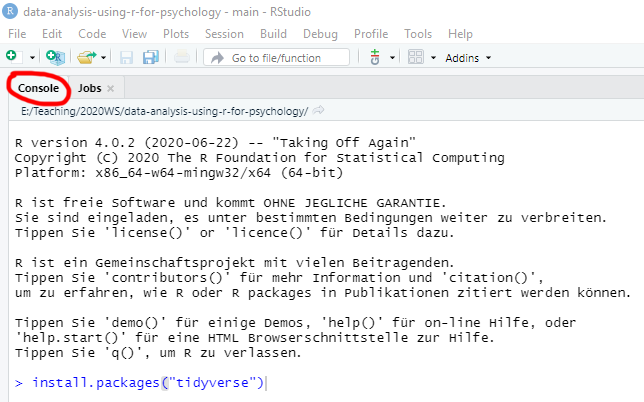
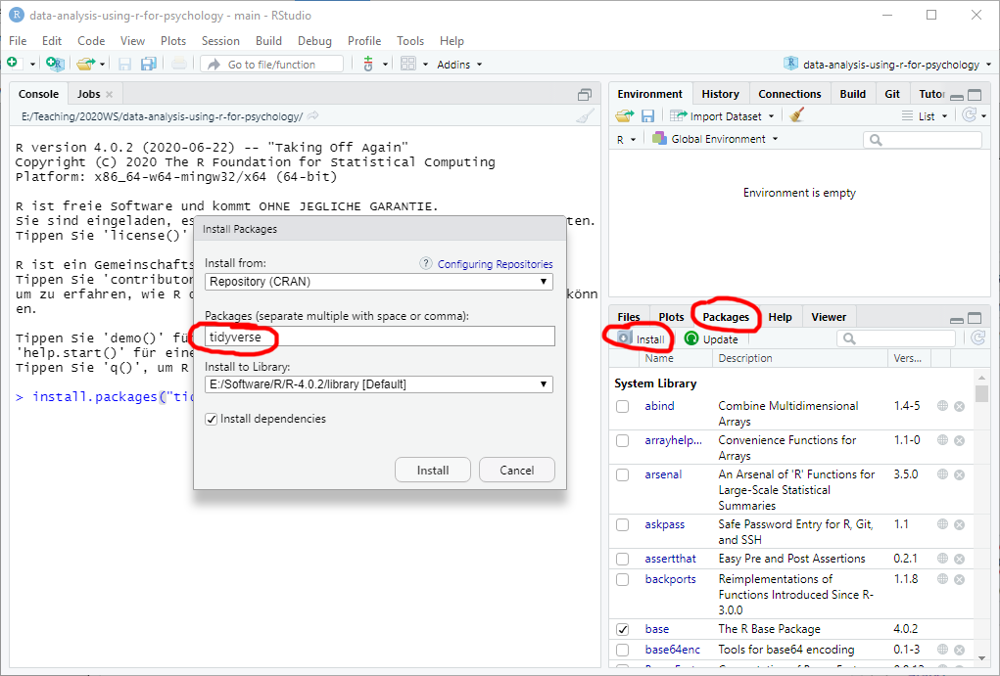

Software
Installing R
Go to r-project.org and download a current stable version of R for your platform. Run the installer, accepting all defaults.
Installing R-Studio
Go to rstudio.com and download RStudio Desktop Free edition for your platform. Install it using defaults. The R-Studio is an integrated development environment for R but you need to install R separately first! The R-Studio will automatically detect latest R that you have and, in case you have several versions of R installed, you will be able to alter that choice via Tools / Global Options… menu.
I will explain the necessary details on using R-Studio throughout the seminar but the official cheatsheet is an excellent, compact, and up-to-date source of information. In fact, R Studio has numerous cheatsheets that describe individual packages in a compact form.
Installing RTools
If you are using Windows, you might need Rtools for building and running some packages. You do not need to install it at the beginning, but when we will need it later, just following the link above, download the latest Rtools version, run the installer using the defaults and follow the instructions on that page to put Rtools on the PATH!
Installing packages
The real power of R lies in a vast community-driven family of packages suitable for any occasion. The default repository used by R and R-Studio is The Comprehensive R Archive Network (a.k.a. CRAN). It has very strict requirements for submitted packages, which makes it very annoying for the authors but ensures high quality for you. We will use CRAN as a sole source of packages, but there are alternatives, such as Bioconductor that might have a package that is missing on CRAN. The Bioconductor relies on its own package manager, so you will need to consult the latest manual on their website.
To install a CRAN package you have two alternatives: via command line function or via R-Studio package manager interface (which will call the function for you). In the former case, go to Console tab and type install.packages("package-name"), for example install.packages("tidyverse"), and press Enter.

Alternatively, go to Packages tab, click on Install button, enter a package name in the window (it has autocomplete to help you), and press Install.

Sometimes, R will ask whether you want to install packages from source. In this case, it will grab the source code and compile the package, which takes time and requires RTools. In most cases, you can say “No” to install a pre-build binary version. The binary version will be slightly outdated but the emphasis is on slightly.
On other occasions, R-Studio will suggest restarting R Session as packages that need to be updated in use. You can do that but, in my experience, this could become a repetitive experience if one of the packages is used R Studio itself (so it starts it in a new session, realizes that it is in use, suggests to restart the session, etc.) My solution is to close all R Studio windows and use R directly. For Windows, you can find it the Start Menu, just make sure that you are using the correct version. Then, I use install.packages() to install and update everything I need.
Minimal set of packages
Please install the following packages:
tidyverse: includes packages from data creation (tibble), reading (readr), wrangling (dplyr,tidyr), plotting (ggplot2). Plus type specific packages (stringrfor strings,forcatsfor factors) and functional programming (purrr).rmarkdown: package for working with RMarkdown notebooks, which will we use to create reproducible analysis.fs: file system utilities.
Keeping R and packages up-to-date
R and packages are getting constantly improved, so it is a good idea to regularly update them. For packages, you can use Tools / Check for Packages Updates… menu in R-Studio. To update R and, optionally, packages, you can use installr package that can install newest R (but it keeps old version!) optionally copying your entire library of packages, updating packages, etc. It is easy to use even in R itself, as it creates an extra menu to make your life easier. For R-Studio itself, use Help / Check for Updates menu and install a newer version, if it is available (it is generally a good idea to keep your R-Studio in the newest state).